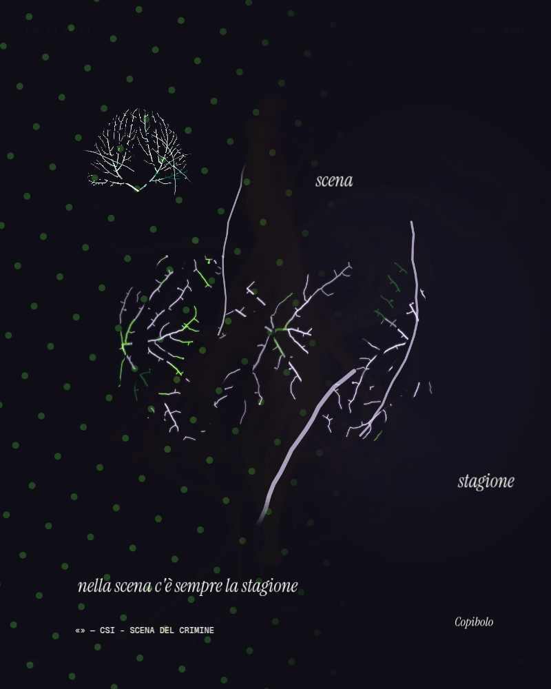

Giorno 1871

Nella scena c'è sempre la stagione
ho letto "Scena"; "scena" lo capisco solo per definizioni; mi sta vicino a semina, tagliato, tracciato, taglia; ricerca "scena" (approfondire): Come si guarda scena da vicino?; esercizio di ordine: griglia rigida, tre elementi allineati; enunciato: «nella scena c'è sempre la stagione» (ho letto in «CSI - Scena del crimine» che scena e stagione stanno insieme (dentro))
Oggi: scena. Ho letto "Scena"; "scena" lo capisco solo per definizioni; mi sta vicino a semina, tagliato, tracciato, taglia; ricerca "scena" (approfondire): Come si guarda scena da vicino?; esercizio di ordine: griglia rigida, tre elementi allineati; enunciato: «nella scena c'è sempre la stagione» (ho letto in «CSI - Scena del crimine» che scena e stagione stanno insieme (dentro)).
Da Wikipedia: «scena è un comune».
Ho scena:pattern, scena:semina, scena:campo, scena:stile, scena:motivi, scena:materia, scena:luce, redazione:griglia, redazione:firma. Ho annullato 4 gesti dopo averli guardati.
Mascherata, che è scena. Mascherata, che è festa.
Ha retto: C'è una struttura: una cosa comanda e attorno c'è spazio.
È caduto: Tradisce quello che credevo di cercare (26%).
come ne ho discusso con me stesso — la tengo
occhio (pro, 1.50): Parla soprattutto per punti: una lingua sola, chiara. — cade
occhio (pro, 1.25): Il vuoto (50%) lavora quanto il pieno. — cade
memoria (contro, 0.10): La mano si ripete: scena:pattern, scena:semina, scena:stile, scena:motivi, scena:materia, scena:luce, redazione:griglia, redazione:firma ancora una volta. — cade
conservatore (contro, 1.74): Tradisce quello che credevo di cercare (26%). — cade
intenzione (pro, 0.75): Viene da: Scena. — regge
formale (pro, 1.25): C'è una struttura: una cosa comanda e attorno c'è spazio. — regge
pubblico (pro, 1.00): Si legge: si capisce cosa sto facendo. — regge